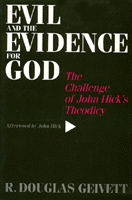

<body bgcolor="#FFFFFF" text="#000000" link="#0000FF" vlink="#CC0000" alink="#CC0000"><center><hr width="350" size="1" align="center" noshade>A new theodicy embracing the Augustinian tradition of free will as the touchstone for evil<hr width="350" size="1" align="center" noshade><p><a href="https://cdcshoppingcart.uchicago.edu/Cart/ChicagoBook.aspx?ISBN=9781566390941&&PRESS=temple" target="_top">Buy this book!</a> | <a href="https://cdcshoppingcart.uchicago.edu/Cart/Cart.aspx?PRESS=temple" target="_top">View Cart</a> | <a href="https://cdcshoppingcart.uchicago.edu/Cart/Cart.aspx?PRESS=temple" target="_top">Check Out</a></p><p></p></center><!--none//--><h1>Evil and the Evidence for God</h1>
<H2>The Challenge of John Hick's Theodicy</H2>
<H2><!-- Afterword by John Hick --></H2>
<h3>R. Douglas Geivett, afterword by John Hick</h3>
<P>cloth 1-56639-094-X $69.95, Nov 93, <FONT COLOR=#990033>Out of Stock Unavailable</FONT>
<br>paper 1-56639-397-3 $42.95, Aug 95, <FONT COLOR=#990033>Available</FONT>
<BR> 288 pp
6x9
</P><BLOCKQUOTE><I>"By appealing to recent scientific opinion that the universe may well have had an absolute beginning, Geivett develops an interesting, forceful argument for the rationality of belief in God. He then expounds the Augustinian free will theodicy and defends it against Hick's criticisms."</I>
<br>&#151<b>William L. Rowe</b><I></I></BLOCKQUOTE>
<p>How to reconcile the existence of evil with the belief in a benevolent God has long posed a philosophical problem to the system of Christian theism. John Hick's book, <I>Evil and the Love of God</I>, is perhaps the best known work to redress this difficulty in modern terms. Sharing Hick's interest in responding to the question of evil, R. Douglas Geivett constructs his own new "theodicy for today." But Geivett departs from Hick by embracing the Augustinian tradition of free will and returning the responsibility for evil to human beings themselves.
<BR>&nbsp;<h2>Excerpt</h2><P>Excerpt available at <a href="http://www.temple.edu/tempress">www.temple.edu/tempress</a></p>
<BR>&nbsp;<h2>Reviews</h2>
<p><I>"Moving from a comparison of the Irenaean and Augustinian traditions in theodicy to a powerfully original critique of Hick's influential 'soul-making' theodicy, Geivett presents a richly developed natural theology drawing on contemporary scientific opinion in support of an ex nihilo creation. Geivett's writing on natural theology is lucid and informed, honestly engaging many of that tradition's critics....This work is notable for its exceptionally thorough documentation and references, making it a valuable sourcebook for reflection on God and evil. A stimulating afterword by Hick himself significantly enriches this book's provocative analyses."</I>
<br>&#151<b><I>Religious Studies Review</I></b>
<p><I>"Geivett details a natural theology and develops a way of understanding the existence of evil that places the fact of evil within, rather than in opposition to, a theistic view. Both the natural theology and the theodicy are rich and complex."</I>
<br>&#151<b>Keith E. Yandell</b>, University of Wisconsin
<p><I>"In this interesting and worthwhile work, Geivett's statement of arguments in natural theology is fuller and fairer than that given by Hick in his writings. This book is an outstanding contribution to the field."</I>
<br>&#151<b>Richard L. Purtill</b>, Western Washington University
<BR>&nbsp;<h2>Contents</h2><P>
<p>Preface
<p><b>Part I: Two Traditions</b>
<br>1. The Problem of Evil
<br>2. The Augustinian Tradition
<br>3. John Hick's Theodicy
<p><b>Part II: Religious Epistemology</b>
<br>4. The Value of Natural Theology
<br>5. The Danger of Dismissing Natural Theology
<br>6. The Possibility of Natural Theology, Part 1: The Argument for a Non-Natural Reality
<br>7. The Possibility of Natural Theology, Part 2: Personality, Power, and Providence
<br>8. Explanation and Religious Ambiguity
<p><b>Part III: Theodicy Proper</b>
<br>9. John Hick's View of Divine Purpose
<br>10. The Augustinian View of Divine Purpose
<br>11. Free Will and Evil
<br>12. Evil and the Afterlife
<p>Afterword by John Hick
<br>Notes
<br>Index
</P><BR>&nbsp;<H2>About the Author(s)</H2>
<table><tr><td valign="top"><img src="/tempress/authors/972_au1.gif" height="90" width="75"></td><td width="100%" valign="middle"><p><B>R. Douglas Geivett</B> is Associate Professor of Philosophy at Biola University in La Mirada, California.</P></td></tr></table>
<BR><H2>Subject Categories</H2>
<p><A HREF="/tempress/philosophy.html" TARGET="_top">Philosophy and Ethics</a>
<BR><A HREF="/tempress/religion.html" TARGET="_top">Religion</a>
</p>
<p align="center"><a href="https://cdcshoppingcart.uchicago.edu/Cart/ChicagoBook.aspx?ISBN=9781566390941&&PRESS=temple" target="_top">Buy this book!</a> | <a href="https://cdcshoppingcart.uchicago.edu/Cart/Cart.aspx?PRESS=temple" target="_top">View Cart</a> | <a href="https://cdcshoppingcart.uchicago.edu/Cart/Cart.aspx?PRESS=temple" target="_top">Check Out</a></p><p><font face="Arial" size="1"><a href="copyright.html" onMouseOver="window.status='Web Copyright Policy';return true;" onMouseOut="window.status=''" title="Web Copyright Policy">&copy;</a> 2015 <a href="http://www.temple.edu" target="new" onMouseOver="window.status='Link to Temple University home page';return true;" onMouseOut="window.status=''" title="Link to Temple University home page">Temple University</a>. All Rights Reserved. http://www.temple.edu/tempress/titles/972_reg.html</font></p>